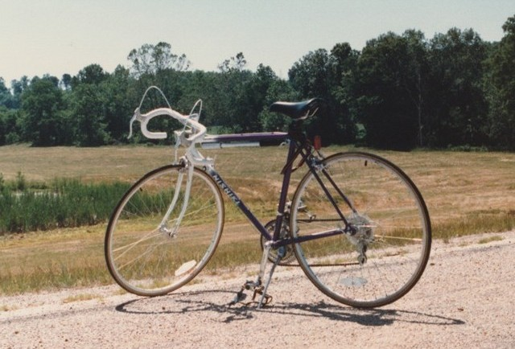
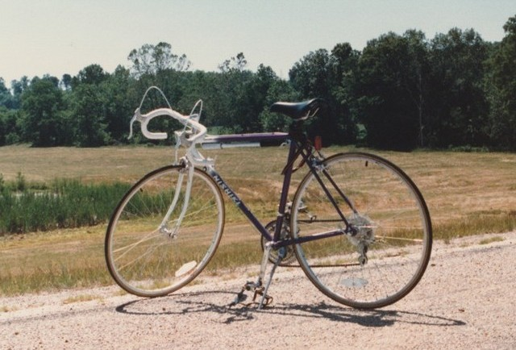

過去のクロモリ
ブリジストン Atrantis スポルティーフ
ランドナーとロードバイクの中間的な位置づけのスポルティーフという種類の自転車。 自転車の知識が無かった貧乏学生が、なぜ普及モデルのロードマンではなく 上位モデルのAtlantisを購入したのかは謎である。 たまたま購入したこの自転車のおかげで長距離ツーリングの楽しみを知り、今に至る。

Nishiki Custom Sport
米国滞在時に日常の移動手段として買ったNishikiのロードバイク。 駆動系はSuntour、制動系はDia Compe、ホイールはArayaという、そうそうたるJapanブランド。 最後の写真は購入した自転車屋。
 
